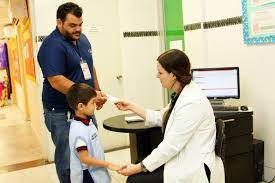

Área Médica
El Área Médica se encarga:
El Centro de Desarrollo Infantil (CENDI) a través del Área Médica asume el rol de la Promoción de espacios y estilos de vida saludables dentro de la población escolar, impulsando la Educación para la Salud desde un punto de vista integral para lograr potenciar las capacidades y los aprendizajes en todos los niños y niñas y obtener mejores logros educativos y de salud.
Tiene como eje principal la Salud Preventiva, su objetivo es mantener un estado de salud óptimo de todos los niños y niñas del CENDI mediante la implementación de acciones preventivas, educativas y de gestión médica.
La red preventiva consiste en diseñar estrategias médicas necesarias y específicas dirigidas a cada grupo de edad.
La visión del CENDI en materia de Salud Integral es trascender como una de las Instituciones pioneras de nuestro País en acciones de Fomento y Cuidado de la Salud con el objetivo central del Desarrollo Armónico Integral Del Niño a través de la vigilancia de su Sano crecimiento y desarrollo, Estado Nutricional adecuado, Fomento a la Lactancia Materna y generación de espacios educativos ergonómicos y saludables.
Área de Nutrición
El Área Médica se encarga:
El Área de Nutrición se encarga:
De Coordinar y supervisar la recepción, la elaboración y la ministración de alimentos para los niños y niñas de los Centros de Desarrollo Infantil.
Una alimentación sana y equilibrada es indispensable para el crecimiento óptimo de los niños por lo cual es importante el suministro de una nutrición adecuada durante el inicio de la infancia ya que esto conlleva a efectos positivos durante toda la vida tanto en el desarrollo físico, mental y social. La alimentación es un aspecto fundamental en la vida del ser humano, nuestras funciones cognitivas están significativamente vinculadas a lo que ingerimos, por ende el cerebro humano requiere para su buen funcionamiento del aporte continuo de nutrimentos provenientes de los alimentos.
Es por esto que en los Centros De Desarrollo Infantil, a través del área de nutrición se mantiene y asegura el estado nutricio óptimo de los niños y niñas por medio de una alimentación basada en el Plato del Bien Comer y la Jarra del Buen Beber siendo ésta adecuada, equilibrada, balanceada, variada, inocua y enriquecida con suplementos nutricionales que contienen los nutrientes y neuronutrientes necesarios para potencializar su desarrollo; a la vez que fomentan correctos hábitos de alimentación e higiene con intención de trascender en una cultura alimentaria que favorezca el desarrollo sano del niño.


Área de Odontología
El Área de Odontología se encarga:
El Centro de Desarrollo Infantil se caracteriza por ser una institución innovadora en la promoción de la salud preventiva, la cual hace extensiva a través de la creación del Programa de Salud Dental, como parte de nuestra misión de proporcionarle salud integral a todos los niños y niñas.
Tiene como objetivo fomentar la cultura de la higiene dental, mediante la enseñanza y práctica de hábitos saludables para lograr una óptima salud bucal.
Los CENDI estan dotados de un consultorio dental, equipado con una unidad dental atendido por 3 Odontólogas, donde se atiende a todos los niños y niñas del CENDI de manera gratuita durante todo el ciclo escolar.
Área de Pedagogía
El Área de Pedagogía se encarga:
El servicio pedagógico en el CENDI se considera un proceso clave que aborda el quehacer docente desde la perspectiva de lograr el desarrollo integral y armónico de los niños y niñas en la primera infancia, cumpliendo con los programas, metas y objetivos establecidos a través de un proceso sistematizado, dinámico, planificado y organizado de actividades educativas, se promueve la incorporación progresiva de aprendizajes significativos en ambientes estimulantes y enriquecidos, cuyas influencias aporten para que se cumplan los fines de la educación, que es formar el perfil del futuro ciudadano que pueda incorporarse a la sociedad en condiciones de competencia, libertad e integridad.
De Supervisar, asesorar y evaluar los programas pedagógicos vigentes con estrategias de aprendizaje para lactantes, maternales y preescolares en un ambiente educativo de calidad que, centrados en los procesos de desarrollo infantil, promuevan la estimulación óptima de sus competencias, logrando niñas y niños seguros, autosuficientes y con valores.
El área pedagógica también coordina la ejecución de los Programas Innovadores Cocurriculares o Compensatorios, de Reforzamiento, e Interactivos.

Área de Psicología
El Área de Psicología se encarga:
El poder conseguir un desarrollo sano y armónico de los niños y niñas que asisten al CENDI es uno de los principios que motivan nuestro accionar, es por ello, que como parte de los procesos clave de nuestra organización, el Área de Psicología se encuentra en una posición estratégica en donde su principal objetivo es el de propiciar en cada etapa del desarrollo biopsicosocial y emocional del niño un ambiente educativo armónico y altamente estimulante para las experiencias tempranas que formaran su personalidad. Así como condiciones positivas e integradoras para el personal que labora dentro de la institución.
El CENDI se encuentra igualmente comprometido con su Capital Humano y es por ello que el área de psicología participa en generar un ambiente armónico por medio de diferentes acciones como son: selección de personal por medio de exámenes psicométricos previo a su ingreso a CENDI, medición del clima laboral, inventario de estrés laboral, evaluación de las relaciones humanas, evaluación del liderazgo y evaluación del equipo líder. Estos instrumentos nos permiten generar estrategias para mejorar el desempeño, la convivencia y productividad laboral.
Nuestro compromiso es colaborar en la formación de individuos con un estado emocional equilibrado y armónico para el desarrollo de una adecuada salud mental que les permita adquirir recursos emocionales para afrontar su vida futura como una persona responsable, exitosa y feliz.
Área Trabajo Social
El Área Trabajo Social se encarga:
Llevar a cabo las acciones conforme a la normatividad para el otorgamiento de ingreso de las hijas e hijos de las trabajadoras y trabajadores del IPN a los Centros de Desarrollo Infantil, así como supervisar y asesorar las actividades del área de trabajo social para el logro de los objetivos.
De Supervisar, asesorar y evaluar los programas pedagógicos vigentes con estrategias de aprendizaje para lactantes, maternales y preescolares en un ambiente educativo de calidad que, centrados en los procesos de desarrollo infantil, promuevan la estimulación óptima de sus competencias, logrando niñas y niños seguros, autosuficientes y con valores.
El área de trabajo social tiene como propósito fundamental ser el vínculo de enlace entre el CENDI, la familia y la comunidad. Su competencia se finca en realizar funciones de gestoría, comunicación y de diagnóstico del medio socioeconómico de las familias y el entorno de la comunidad educativa.